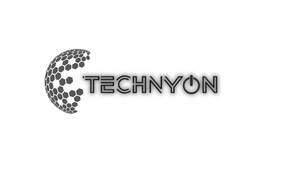

Trade Mark Journal No.2025/014 4 April 2025
UK00004174841 17 March 2025 (9)

- Class 9
- Projectors; Planetarium projectors; LCD projectors; Movie projectors; Film projectors; Slide projectors; Portable projectors; Overhead projectors; Video projectors; Picture projectors; Holographic projectors; Slides for overhead projectors; Cinematographic projectors; Multimedia projectors; Image projectors; Cine projectors; Mini beam projectors; Lenses for projectors; Home theater projectors; Photography projectors; Sound projectors; Mini projectors; Digital projectors; Photographic projectors; Movie editing projectors; Batteries for projectors; Laser projection televisions; Profile projectors; Motion picture projectors; Projection screens; LCD [liquid crystal display] projectors; Remote controls for projectors; Power cables for projectors; Video projection monitors; Projection screens for movie films; Transparent films [photographic, exposed] for overhead projectors; Slide projection lenses; Large-screen LCDs; Automatic focusing projectors; Projectors for the entertainment industry; High definition multimedia interface cables for projectors; Self-acting focussing projectors; LCD large-screen displays; Slide projection apparatus; Anti-glare filters for televisions and computer monitors; Holographic projection apparatus; Display screen filters adapted for use with televisions; Screen filters for computers and televisions; Holographic screens; Smartphone screen magnifiers; Display screen filters adapted for use with computer monitors; Filter screens for computer screens; Video display screens; Optical viewing screens; Anti-glare screens; Video screens; Film screens; Computer screens; Display screen filters adapted for use with tablet computers; Computer screen filters; Projection apparatus; Monitor screens; Head-mounted video display apparatus; Flat panel electroluminescent display screens; LCD monitors; Photograph projection apparatus; Display screen filters; Computer whiteboards; Liquid crystal displays [LCDs] for home theaters; Anti-glare filters for computer monitors; Plasma display panel (PDP) televisions; Television camera tubes; Cinematographic slides; Speakers for video conferencing; Flash lamps [for cameras]; Flash lamps for cameras; Darkroom lights; Anti-glare filters for televisions; Fluorescent screens; Portable video cameras with built-in videocassette recorders; Display screens; Screens [photography]; Soundbar speakers; Microscope lamps; Display devices, television receivers and film and video devices; Liquid crystal display (LCD) televisions; Screens; Optical filters for plasma display panel; Head-mounted holographic displays.
DIJI TRADING LTD